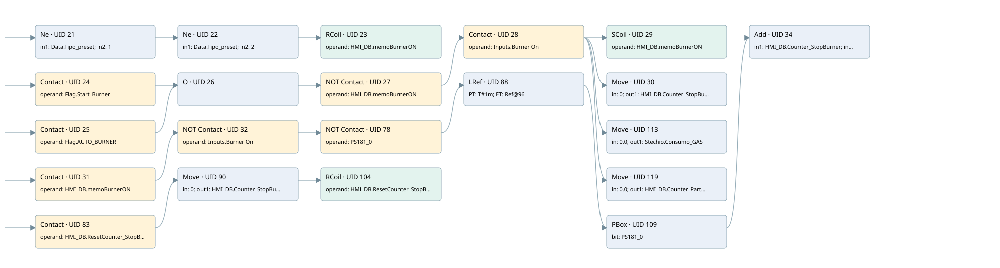

counter burner off during preheating or production
burner control · 검색 색인 순서 7 · 원본 내부 NID 추정 25
백업 PLF 원본의 2711213 바이트 위치에서 복원한 XML. 검색 문서 1860의 객체 키 16102200f272000000000000와 연결했다. 이름 해석 28/29개. 남은 RefId는 상수 또는 미해석 참조다.
연결 구조 다시 그리기
원본 Part/PCon/Wire를 이용한 연결도다. TIA 화면의 래더 배치 또는 실행 결과를 재현한 그림은 아니다. 핀 연결은 아래 표와 원본 XML을 기준으로 읽는다. 노드 위에 마우스를 두면 피연산자 이름을 볼 수 있다.

접점·코일·블록과 피연산자
| Part UID | Gate | Negated 핀 | 연결 피연산자 |
|---|---|---|---|
| 21 | Ne | in1 = Data.Tipo_preset; in2 = 1 | |
| 22 | Ne | in1 = Data.Tipo_preset; in2 = 2 | |
| 23 | RCoil | operand = HMI_DB.memoBurnerON | |
| 24 | Contact | operand = Flag.Start_Burner | |
| 25 | Contact | operand = Flag.AUTO_BURNER | |
| 26 | O | ||
| 27 | Contact | operand | operand = HMI_DB.memoBurnerON |
| 28 | Contact | operand = Inputs.Burner On | |
| 29 | SCoil | operand = HMI_DB.memoBurnerON | |
| 30 | Move | in = 0; out1 = HMI_DB.Counter_StopBurner | |
| 113 | Move | in = 0.0; out1 = Stechio.Consumo_GAS | |
| 119 | Move | in = 0.0; out1 = HMI_DB.Counter_PartialProduction | |
| 31 | Contact | operand = HMI_DB.memoBurnerON | |
| 32 | Contact | operand | operand = Inputs.Burner On |
| 78 | Contact | operand | operand = PS181_0 |
| 88 | LRef | 호출 참조: RefId 252; PT = T#1m; ET = RefId (RefId 없음) / ORef UID 96 | |
| 109 | PBox | bit = PS181_0 | |
| 34 | Add | in1 = HMI_DB.Counter_StopBurner; in2 = 1; out = HMI_DB.Counter_StopBurner | |
| 83 | Contact | operand = HMI_DB.ResetCounter_StopBurner | |
| 90 | Move | in = 0; out1 = HMI_DB.Counter_StopBurner | |
| 104 | RCoil | operand = HMI_DB.ResetCounter_StopBurner |
접점 경로를 펼친 조건식
Contact·O/A·비교기의 원본 연결을 읽기 쉽게 펼친 보조 해석이다. POWER는 전원 레일 시작을 뜻한다. 호출 블록·에지·타이머의 내부 동작과 다중 쓰기 순서는 이 표로 실행 검증하지 않았다. 미해석 핀과 RefId는 원문 연결표에서 확인한다.
| UID | 동작 | 대상 | 원본 접점 경로 | 내용 |
|---|---|---|---|---|
| 23 | RCoil | HMI_DB.memoBurnerON | ([Data.Tipo_preset != 1] AND [Data.Tipo_preset != 2]) | 조건 성립 시 Reset |
| 29 | SCoil | HMI_DB.memoBurnerON | (((Flag.Start_Burner OR Flag.AUTO_BURNER) AND NOT [HMI_DB.memoBurnerON]) AND Inputs.Burner On) | 조건 성립 시 Set |
| 30 | Move | HMI_DB.Counter_StopBurner | (((Flag.Start_Burner OR Flag.AUTO_BURNER) AND NOT [HMI_DB.memoBurnerON]) AND Inputs.Burner On) | Move 입력 0 |
| 113 | Move | Stechio.Consumo_GAS | (((Flag.Start_Burner OR Flag.AUTO_BURNER) AND NOT [HMI_DB.memoBurnerON]) AND Inputs.Burner On) | Move 입력 0.0 |
| 119 | Move | HMI_DB.Counter_PartialProduction | (((Flag.Start_Burner OR Flag.AUTO_BURNER) AND NOT [HMI_DB.memoBurnerON]) AND Inputs.Burner On) | Move 입력 0.0 |
| 90 | Move | HMI_DB.Counter_StopBurner | HMI_DB.ResetCounter_StopBurner | Move 입력 0 |
| 104 | RCoil | HMI_DB.ResetCounter_StopBurner | Move UID 90.eno (블록 동작 확인) | 조건 성립 시 Reset |
원본 배선 연결
| Wire UID | 동일 Wire 연결 끝점 |
|---|---|
| 53 | Powerrail {} ↔ Part 21.pre ↔ Part 24.in ↔ Part 25.in ↔ Part 31.in ↔ Part 83.in |
| 54 | ORef 35 (Data.Tipo_preset) ↔ Part 21.in1 |
| 55 | ORef 36 (1) ↔ Part 21.in2 |
| 56 | Part 21.out ↔ Part 22.pre |
| 57 | ORef 37 (Data.Tipo_preset) ↔ Part 22.in1 |
| 58 | ORef 38 (2) ↔ Part 22.in2 |
| 59 | Part 22.out ↔ Part 23.in |
| 60 | ORef 39 (HMI_DB.memoBurnerON) ↔ Part 23.operand |
| 61 | ORef 40 (Flag.Start_Burner) ↔ Part 24.operand |
| 62 | Part 24.out ↔ Part 26.in1 |
| 63 | ORef 41 (Flag.AUTO_BURNER) ↔ Part 25.operand |
| 64 | Part 25.out ↔ Part 26.in2 |
| 65 | Part 26.out ↔ Part 27.in |
| 66 | ORef 42 (HMI_DB.memoBurnerON) ↔ Part 27.operand |
| 67 | Part 27.out ↔ Part 28.in |
| 68 | ORef 43 (Inputs.Burner On) ↔ Part 28.operand |
| 69 | Part 28.out ↔ Part 29.in ↔ Part 30.en ↔ Part 113.en ↔ Part 119.en |
| 70 | ORef 44 (HMI_DB.memoBurnerON) ↔ Part 29.operand |
| 71 | ORef 45 (0) ↔ Part 30.in |
| 72 | Part 30.out1 ↔ ORef 46 (HMI_DB.Counter_StopBurner) |
| 117 | ORef 114 (0.0) ↔ Part 113.in |
| 118 | Part 113.out1 ↔ ORef 115 (Stechio.Consumo_GAS) |
| 123 | ORef 120 (0.0) ↔ Part 119.in |
| 124 | Part 119.out1 ↔ ORef 121 (HMI_DB.Counter_PartialProduction) |
| 73 | ORef 47 (HMI_DB.memoBurnerON) ↔ Part 31.operand |
| 74 | Part 31.out ↔ Part 32.in |
| 75 | ORef 48 (Inputs.Burner On) ↔ Part 32.operand |
| 84 | Part 32.out ↔ Part 78.in |
| 86 | ORef 87 (PS181_0) ↔ Part 78.operand |
| 91 | Part 78.out ↔ Part 88.IN |
| 93 | ORef 95 (T#1m) ↔ Part 88.PT |
| 108 | Part 88.Q ↔ Part 109.in |
| 94 | Part 88.ET ↔ ORef 96 (RefId (RefId 없음)) |
| 112 | ORef 110 (PS181_0) ↔ Part 109.bit |
| 111 | Part 109.out ↔ Part 34.en |
| 79 | ORef 50 (HMI_DB.Counter_StopBurner) ↔ Part 34.in1 |
| 80 | ORef 51 (1) ↔ Part 34.in2 |
| 81 | Part 34.out ↔ ORef 52 (HMI_DB.Counter_StopBurner) |
| 82 | ORef 85 (HMI_DB.ResetCounter_StopBurner) ↔ Part 83.operand |
| 92 | Part 83.out ↔ Part 90.en |
| 98 | ORef 100 (0) ↔ Part 90.in |
| 106 | Part 90.eno ↔ Part 104.in |
| 99 | Part 90.out1 ↔ ORef 101 (HMI_DB.Counter_StopBurner) |
| 107 | ORef 116 (HMI_DB.ResetCounter_StopBurner) ↔ Part 104.operand |
식별자 해석 근거 29개
| ORef UID | RefId | 이름 | IdentXmlPart 파일 | 해석 방법 |
|---|---|---|---|---|
| 35 | 247 | Data.Tipo_preset | 0585-IdentXmlPart.xml | UID/RID + search-text + NID agreement |
| 36 | 49 | 1 | 0586-IdentXmlPart.xml | literal candidate: UID/RID/NID + nearby named declarations + search-text agreement |
| 37 | 247 | Data.Tipo_preset | 0585-IdentXmlPart.xml | UID/RID + search-text + NID agreement |
| 38 | 110 | 2 | 0586-IdentXmlPart.xml | literal candidate: UID/RID/NID + nearby named declarations + search-text agreement |
| 39 | 249 | HMI_DB.memoBurnerON | 0585-IdentXmlPart.xml | UID/RID + search-text + NID agreement |
| 40 | 19 | Flag.Start_Burner | 0585-IdentXmlPart.xml | UID/RID + search-text + NID agreement |
| 41 | 147 | Flag.AUTO_BURNER | 0585-IdentXmlPart.xml | UID/RID + search-text + NID agreement |
| 42 | 249 | HMI_DB.memoBurnerON | 0585-IdentXmlPart.xml | UID/RID + search-text + NID agreement |
| 43 | 227 | Inputs.Burner On | 0585-IdentXmlPart.xml | UID/RID + search-text + NID agreement |
| 44 | 249 | HMI_DB.memoBurnerON | 0585-IdentXmlPart.xml | UID/RID + search-text + NID agreement |
| 45 | 52 | 0 | 0586-IdentXmlPart.xml | literal candidate: UID/RID/NID + nearby named declarations + search-text agreement |
| 46 | 250 | HMI_DB.Counter_StopBurner | 0585-IdentXmlPart.xml | UID/RID + search-text + NID agreement |
| 114 | 259 | 0.0 | 0586-IdentXmlPart.xml | literal candidate: UID/RID/NID + nearby named declarations + search-text agreement |
| 115 | 260 | Stechio.Consumo_GAS | 0585-IdentXmlPart.xml | UID/RID + search-text + NID agreement |
| 120 | 259 | 0.0 | 0586-IdentXmlPart.xml | literal candidate: UID/RID/NID + nearby named declarations + search-text agreement |
| 121 | 262 | HMI_DB.Counter_PartialProduction | 0585-IdentXmlPart.xml | UID/RID + search-text + NID agreement |
| 47 | 249 | HMI_DB.memoBurnerON | 0585-IdentXmlPart.xml | UID/RID + search-text + NID agreement |
| 48 | 227 | Inputs.Burner On | 0585-IdentXmlPart.xml | UID/RID + search-text + NID agreement |
| 87 | 256 | PS181_0 | 0582-IdentXmlPart.xml | UID/RID + search-text + NID agreement |
| 95 | 254 | T#1m | 0586-IdentXmlPart.xml | literal candidate: UID/RID/NID + nearby named declarations + search-text agreement |
| 96 | (RefId 없음) | 미해석 RefId | 식별 선언 원본 참조 | 미해석 |
| 110 | 256 | PS181_0 | 0582-IdentXmlPart.xml | UID/RID + search-text + NID agreement |
| 50 | 250 | HMI_DB.Counter_StopBurner | 0585-IdentXmlPart.xml | UID/RID + search-text + NID agreement |
| 51 | 49 | 1 | 0586-IdentXmlPart.xml | literal candidate: UID/RID/NID + nearby named declarations + search-text agreement |
| 52 | 250 | HMI_DB.Counter_StopBurner | 0585-IdentXmlPart.xml | UID/RID + search-text + NID agreement |
| 85 | 264 | HMI_DB.ResetCounter_StopBurner | 0585-IdentXmlPart.xml | UID/RID + search-text + NID agreement |
| 100 | 52 | 0 | 0586-IdentXmlPart.xml | literal candidate: UID/RID/NID + nearby named declarations + search-text agreement |
| 101 | 250 | HMI_DB.Counter_StopBurner | 0585-IdentXmlPart.xml | UID/RID + search-text + NID agreement |
| 116 | 264 | HMI_DB.ResetCounter_StopBurner | 0585-IdentXmlPart.xml | UID/RID + search-text + NID agreement |
검색 코드 보조 자료
참조 명칭을 찾기 위한 자료이며 실행 순서나 AND/OR 관계는 위 연결표로 확인한다.
"data".tipo_preset 1 "data".tipo_preset 2 "hmi_db".memoburneron "flag".start_burner "hmi_db".memoburneron "inputs"."burner on" "hmi_db".memoburneron move 0 "hmi_db".counter_stopburner move 0.0 "stechio".consumo_gas move 0.0 "hmi_db".counter_partialproduction "flag".auto_burner "hmi_db".memoburneron "inputs"."burner on" "ps181_0" ton "iec_timer_0_db_1" t#1m "ps181_0" add "hmi_db".counter_stopburner 1 "hmi_db".counter_stopburner "hmi_db".resetcounter_stopburner move 0 "hmi_db".resetcounter_stopburner "hmi_db".counter_stopburner